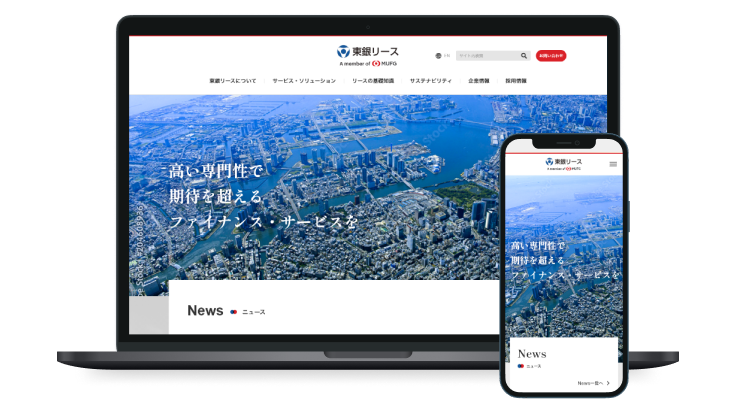
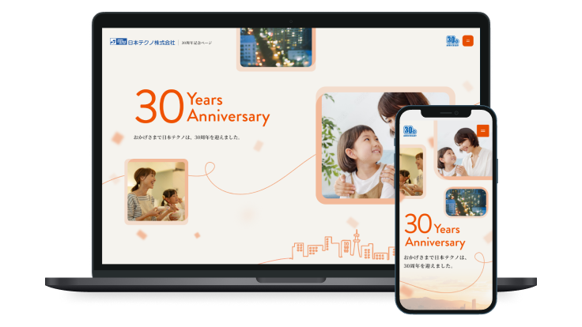
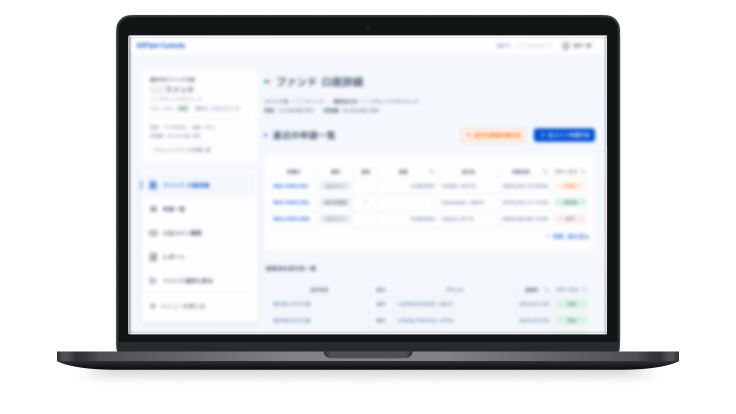
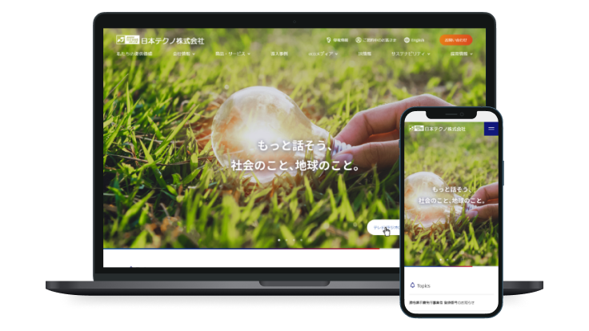
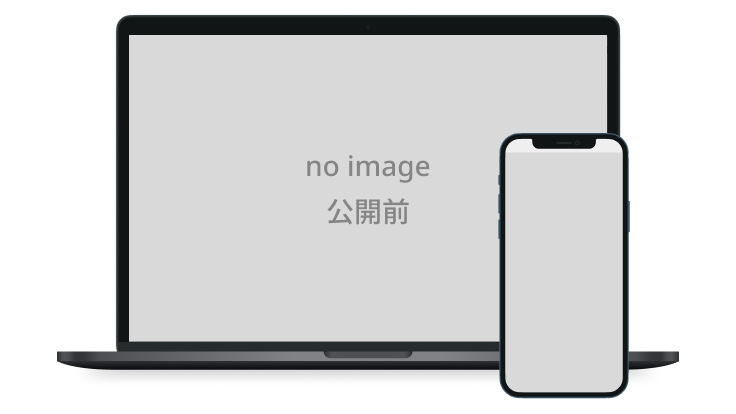

ユーザーとサイト更新者、
どちらにもやさしいUIを設計する。
UIデザイナー ／ 経験4年
CMS運用やコンポーネント設計、デザインシステムを通して、使いやすさと運用性を両立したUIづくりを大切にしています。
Works

大手金融グループ傘下 総合リース会社 コーポレートサイト
大手金融グループ傘下の総合リース会社のコーポレートサイトリニューアル。デザインシステム設計と運用体制の構築を担当。
- ヒアリング
- デザイン提案
- デザインシステム設計
- クオリティチェック

環境関連事業を展開する総合エネルギー企業 30周年記念サイト
スクロール連動アニメーションで周年サイトとしての特別感を演出。体験設計と認識合わせを主導。
- ヒアリング
- デザイン提案
- メインページデザイン
- 設計者連携

仮想通貨取引システム UI
銀行職員向け取引管理画面の情報設計とUI改善。ブランドガイドラインを遵守しながら操作性を向上。
- UIデザイン
- 画面設計
- 情報整理
- ワイヤーフレーム改善提案

環境関連事業を展開する総合エネルギー企業 コーポレートサイト
企業の社会的価値を伝える情報設計と、運用前提のデザインガイドライン整備。
- 情報設計
- デザイン提案
- ガイドライン整備
- 進行管理

大手旅行会社 コーポレートサイトリニューアル
ヘッドレスCMS運用を前提とした大規模サイトのコンポーネント設計。再利用性と拡張性を両立したデザインシステムを構築。
- UIデザイン
- コンポーネント設計
- 情報設計
- デザインシステム設計
デザインシステム
大手金融グループ傘下 総合リース会社 コーポレートサイト
作成期間
2024年10月 – 2025年4月
担当
- ヒアリング
- デザイン提案
- デザインシステム設計
- クオリティチェック
課題
大手金融グループ傘下としてのブランドイメージがサイトから伝わりにくく、ページごとにコンポーネントの表現がばらついていた。更新時の判断が属人的になりやすく、長期運用で品質が揺れやすい状態だった。
施策
- 既存UIとワイヤーフレームをもとにコンポーネントを洗い出し、用途ごとに整理
- 余白・配色・タイポグラフィルールをFigma上で明文化しガイドラインとして機能させた
- GitLab Wikiで命名規則・更新フロー・承認フローを整備
- 量産前に使用ルールを共有、量産後にページ全体のクオリティチェックを実施
成果
- サイト全体にデザインの一貫性が生まれ、グループブランドにふさわしい信頼感を表現
- 複数人で制作・更新しても品質が揺れにくい状態を構築
- デザイン・開発・運用間の認識齟齬と修正工数を削減
概要
大手金融グループブランドへの統一を目的としたコーポレートサイトリニューアル。既存サイトに存在するデザインのばらつきを整理し、ブランドイメージを統一しながら、複数デザイナー・エンジニアが継続的に運用できるデザイン基盤の構築を担当した。
取り組み
1. モジュールの棚卸しとデザイン基盤の再設計
ブランド刷新に伴い、既存サイトと新規ワイヤーフレームを分析し、レイアウト・リスト・JavaScriptウィジェットなど役割ごとにモジュールを分類した。
類似するモジュールや不要なパターンを一覧化してExcelで管理。ディレクターとレビューを重ねながら「残すもの」「統合するもの」「新規作成するもの」を整理し、コンポーネントの乱立を防ぎながら、再利用しやすいデザイン基盤を設計した。
2. デザインルールの可視化
これまでデザインデータ内に記載していたルールをGitLab Wikiへ移行し、余白ルール、モジュール構成、ディレクトリ構造、画像書き出し設定、承認フローなどを継続的に更新した。
デザイン作業と並行してWikiを整備することで、新しく参加したデザイナーやエンジニアも同じルールを参照できる環境を構築し、担当者が変わっても迷わず作業を進められる状態を実現した。
3. レビュー品質を支える運用改善
ページ数の多いプロジェクトでは、デザイナーだけで実装後の品質確認を行うことが難しいため、Backlogの課題テンプレートに実装者向けのセルフチェックリストを組み込んだ。
実装者が事前にデザインチェックを行ったうえでレビューへ進む運用とすることで、確認観点を統一し、レビュー効率と品質の向上につなげた。
4. 図版デザインのルール化
サイト内では関係図や組織図などの図版を作成する機会が多くあったが、既存サイトでは矢印・アイコン・配色などの表現にばらつきがあり、サイト全体の統一感を損ねる要因となっていた。
そこで、頻繁に利用する役割や要素をFigma上でパーツ化し、「どの要素にはどのパーツを使うか」をルール化。図版制作者が異なっても一定の品質を保てる仕組みを整備した。
また、新しい要素が追加された際にはライブラリへ反映する運用としたことで、プロジェクト全体で継続的に改善されるデザイン資産として活用された。
学び
ブランドリニューアルでは、新しいデザインを制作するだけでなく、既存資産を整理し、長期的に運用できる仕組みを設計することが重要であると学んだ。
また、デザインルールやレビュー工程を言語化・標準化することで、担当者が変わっても品質を維持できる環境づくりの重要性を実感した。
今後も、UIデザインだけでなく、チーム全体が継続的に品質を維持できるデザイン基盤や運用フローまで設計できるデザイナーとして価値を発揮していきたいと考えている。
UX / アニメーション
環境関連事業を展開する総合エネルギー企業 30周年記念サイト
作成期間
dummy
担当
- ヒアリング
- デザイン提案
- メインページデザイン
- 設計者連携
課題
既存の25周年サイトは動きが少なく固い印象。「とにかく印象を変えたい」という抽象度の高い要望のみで、方向性が未定の状態だった。コンテンツは前回から変更がないため、デザインと体験だけで価値を上げる必要があった。
施策
- 週次ショートMTGで方向性をすり合わせ、参考サイトを用いて要望を言語化
- スクロール連動アニメーションを提案、社内事例を収集して実現可能な形に落とし込んだ
- 紙芝居形式の提案資料で「どう動くか」「どんな体験か」を3者間で共有
成果
- アニメーションを活用したストーリー性のある表現を実現
- 既存コンテンツを活かしつつ周年サイトとしての特別感を演出
- 設計フェーズ以降の手戻りを抑制
業務システム UI
仮想通貨取引システム UI
作成期間
dummy
担当
- UIデザイン
- 画面設計
- 情報整理
- ワイヤーフレーム改善提案
課題
銀行職員向け業務システムのため、操作性・視認性・正確性が最優先。既存のブランドガイドラインを遵守しながら、支給されたワイヤーフレームの情報過多な画面構成を改善する必要があった。
施策
- ワイヤーフレームをそのまま踏襲せず、情報優先度・UIパーツの役割を見直して再構成
- 主機能のテーブルが主役に見えるよう見出しサイズと配置を再設計
- 左ナビを折りたたみ可能にし、メインエリアの視認性を向上
- アクセントカラーの使い方を機能別に整理し操作性とブランドらしさを両立
成果
- 情報量の多い業務画面において視認性と操作性を向上
- ブランドガイドライン準拠を維持しながら一貫したUI表現を実現
- ワイヤーフレーム段階からのUI改善提案で、デザイン工程内での使いやすさ向上を実現
デザインシステム / 情報設計
環境関連事業を展開する総合エネルギー企業 コーポレートサイト
作成期間
dummy
担当
- 情報設計
- デザイン提案
- ガイドライン整備
- 進行管理
課題
地球環境保全への取り組みに注力する企業だが、TOPでその価値が伝わっていなかった。方向性変更が複数回発生しスケジュール管理が困難な上、公開後はクライアント自身が運用するためガイドライン整備も必要だった。
施策
- 社会課題との関係性が伝わるコンテンツ構成に情報設計を再構成
- 依存関係を整理し、確定要素から順次進行してスケジュールをコントロール
- 運用前提のガイドライン（配色・タイポ・図版・モジュール）を体系化
- 図版の新規作成/流用を事前整理し、クライアントと合意形成して手戻りを防止
成果
- 企業の社会的価値が伝わる構成に改善
- 図版の事前整理で手戻りを抑制し、効率的に制作を進行
- ガイドライン整備により公開後も一定品質で運用できる状態を構築
概要
環境関連事業を展開する総合エネルギー企業のコーポレートサイトリニューアル。コンペで採用されたデザインをベースに、企業価値がより伝わる情報設計へのブラッシュアップと、公開後にクライアント自身で運用できるガイドライン整備を担当した。
取り組み
1. 企業価値を伝える情報設計への再構成
課題：コンペ時のデザインをベースに制作を進める案件だったが、企業の社会的な役割や環境への取り組みよりも、一部の訴求内容が優先され、コーポレートサイトとして本来伝えるべき価値が十分に表現できていない状態だった。
施策：クライアントからの要望をそのまま反映するのではなく、「なぜその変更を希望するのか」を丁寧にヒアリングし、本質的な目的を整理。その上で、企業価値や社会との関係性が伝わる情報構成を提案し、ユーザー視点とクライアント要望のバランスを取りながらデザインをブラッシュアップした。
成果：企業の社会的価値が伝わる構成に改善。
2. クライアント運用を前提としたガイドライン整備
課題：公開後はクライアント自身がHTML・CSSを編集しながらサイトを運用する体制だったため、デザイン制作だけでなく、継続的に品質を維持できる仕組みづくりにも取り組んだ。
施策：モジュールの利用ルールや配色・タイポグラフィ・図版・禁止事項などをガイドラインとして整理し、「どの場面でどのモジュールを使用するか」を明文化。担当者が変わってもデザインの一貫性を保てる運用基盤を整備した。
成果：ガイドライン整備により公開後も一定品質で運用できる状態を構築。
3. 図版制作の事前整理と合意形成
課題：画像作成の作業工数を算出できておらず、どこまでをリニューアルするのかあいまいな状態でデザイン工程に降りてきた。
施策：制作前に新規作成・流用・リニューアル後追加対応の認識を合わせることで、後工程での手戻りを防ぎ、限られたスケジュールの中でも効率よく制作を進められる体制を構築した。
成果：図版の新規作成・流用を事前整理し手戻りを抑制。効率的に制作を進行した。
学び
この案件を通して、クライアントからの要望をそのまま形にするのではなく、その背景にある目的や課題を理解することの重要性を学んだ。
また、コーポレートサイトでは企業が伝えたい情報だけでなく、ユーザーが知りたい情報とのバランスを考えながら情報設計を行うことが、より価値の伝わるサイトにつながることを実感した。
さらに、公開後の運用まで見据えたガイドラインやルールを整備することで、デザインは納品して終わりではなく、継続的に品質を維持できる仕組みまで設計することがデザイナーの重要な役割であると学んだ。
コンポーネント設計 / CMS
大手旅行会社 コーポレートサイトリニューアル
作成期間
dummy
担当
- UIデザイン
- コンポーネント設計
- 情報設計
- デザインシステム設計
課題
旅行商品・法人サービスなど多様なコンテンツを持つ大規模サイトのリニューアル。ヘッドレスCMSでの運用を前提とし、ページごとに異なるレイアウトや大量のコンテンツに対応できる設計が求められた。設計・開発と並行して進めるスケジュールのため、仕様変更への柔軟な対応も必要だった。
施策
- 既存・新規ワイヤーフレームを横断して全モジュールを洗い出し、共通化・再利用できるコンポーネントを整理
- CMS運用を前提に、更新性・拡張性を意識したコンポーネント設計を実施
- ワイヤーフレームをそのままデザインせず、情報優先度やユーザー導線を見直してレイアウト・UI表現を改善
- デザイナー・開発者双方が扱いやすい命名規則とデザインルールを整備し、実装と整合性のあるデータ設計を実施
成果
- 多数のページで再利用可能なコンポーネント設計により、デザインの一貫性と運用性を向上
- CMS更新を前提としたUI設計で、将来的なページ追加・運用にも対応しやすい構成を実現
- デザイン・設計・開発をまたぐ共通ルールを整備し、プロジェクト全体の品質維持に貢献
概要
約500ページ規模の旅行サイトリニューアルプロジェクト。CMSでクライアント自身がページを更新・運用することを前提に、デザイン制作だけでなく、運用しやすいコンポーネント設計や関係者との合意形成まで担当した。
取り組み
1. 500ページ規模のサイト分析とモジュール設計
既存サイト約500ページを確認し、情報量の多い約100ページをサンプリング。掲載されているパーツをキャプチャしながら一覧化し、CMSで再利用できるモジュールを洗い出した。
洗い出したモジュールは開発者・ディレクターとレビューを行い、必要なパーツを整理したうえで、クライアントとも認識を合わせながら仕様を固めていった。
2. CMS運用を見据えたデザイン設計
クライアントがCMS上で用意されたパーツを組み合わせてページを作成するため、自由にデザインするのではなく、運用しやすさを考慮した設計が求められた。
そのため、情報量が最も多いケースを想定したレイアウトでレビューを行い、公開後の運用イメージを関係者全員が具体的に想像できるよう工夫した。
3. 合意形成を円滑にする進行設計
デザインレビューでは、会議前にFigmaのURLとアジェンダを共有し、事前に内容を確認できる状態を整えた。
会議中はその場でFigmaへコメントを残し、修正内容や決定事項を即時反映することで、未確定事項を減らしながら意思決定を進めた。
4. Figma運用ルールの改善
システム担当・CMS設計・フロントエンド・ディレクター・PM・シニアデザイナーなど、多くのメンバーがレビューに参加する案件だったため、Figma上のコメントが複雑化する課題があった。
そこで、作業用エリアとレビュー用エリアを分離し、レビューコメントはレビューエリアへ集約するルールへ変更。役割ごとに確認する場所を整理することで、コメントの散在を防ぎ、レビュー効率を改善した。
学び
この案件を通して、Webデザインは見た目を整えるだけでは成立せず、CMSやシステム仕様、運用方法まで理解したうえで設計することの重要性を学んだ。
また、ディレクターから与えられた情報だけを待つのではなく、自ら必要な情報を取りに行き、開発・CMS設計・クライアントなど複数の関係者をつなぎながらプロジェクトを前に進める姿勢を意識した。
今後も、UIデザインだけでなく、運用設計や関係者との合意形成まで含めてプロジェクト全体を支えられるデザイナーでありたいと考えている。
About
制作会社でコーポレートサイトや業務システムのUIデザインを担当。プロジェクトを通じて一貫して意識してきたのは、「公開後も迷わず運用できる状態をつくること」です。
デザインシステムの整備や命名規則の策定など、納品して終わりではなく、その後も使われ続けるデザインを追求してきました。次は自分自身がプロダクトに伴走しながら、ユーザーの反応を見てデザインを育てていきたいと考えています。
Skills
- デザインシステム設計
- コンポーネント設計（Figma）
- UIデザイン
- 情報設計 / 要件整理
- HTML / CSS
- ステークホルダー連携